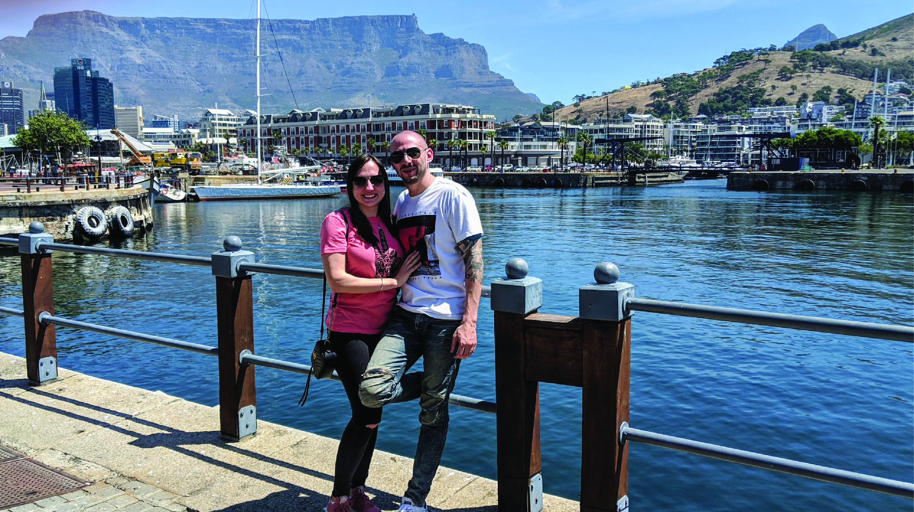

The wedding celebrations were about a month apart, involved flying to Russia, and were immediately followed by the holiday season. Because of this, we planned the honeymoon for the first week of January, just after New Year’s Day. However, wanting to keep the celebratory energy going, we planned a last minute, overnight stay in Cape May, New Jersey.
The morning following the New York celebration, we woke up early, donned our “Mr. & Mrs.” tees (courtesy of Bedroc Custom Printing), mailed out our marriage license, and after grabbing a quick breakfast, we hit the road sporting “Just Married” across the back of our car (cheesy, right?) It took us a second to realize that the cars honking their horns at us along our trip, were doing so in a congratulatory manner!
Cape May is less than three hours from our place in Brooklyn. We pulled up to our Bed and Breakfast excited. It was the first time either of us had stayed at a B&B. Cape May is known for its grand Victorian houses, and the Wilbraham Mansion is beautiful. We loved the décor throughout the Mansion, though the ambiance at night was straight out of a horror flick. After frightening my wife a couple of times, I began to scare myself!
We took advantage of their indoor pool and en-suite Jacuzzi. It really helped amplify the honeymoon vibe. So did the champagne and chocolate covered strawberries we picked up at Washington Street Mall.
The city is charming. We were within walking distance to shops and restaurants, and ten minutes from the beach. It's very pleasant to just stroll about. However, we were probably the youngest couple in the entire city. We sat for breakfast with couples who returned yearly to celebrate their marriage anniversaries. Some as many as fifty years! It was a cool experience sitting with strangers, chatting and breaking bread. Even if they were twice our age.
We visited Cape May Point State Park on our second day and purchased tickets to climb the Cape May Lighthouse. It overlooks the Delaware Bay and Atlantic Ocean. It’s a nice view and we really enjoyed the climb. We also hiked one of the park's nature trails and hung out by the water watching the ducks go by.
After the park, we stopped by the Cape May Winery for a tasting. The place is gorgeous. We sat outback surrounded by flowers, right by a water fountain, enjoying flights of wine, a cheese plate and appetizers. We stayed a couple of hours exploring the grounds and indulging in a few more glasses of wine. It was peaceful and super relaxing – we didn’t want to leave.
The night was young and as usual, we weren’t quite ready to go home. A quick Google search showed a little more adventure wouldn’t take us that much out of our way. And so, we punched “Atlantic City” into the GPS.
The casino’s proved too chancy. Turns out my wife doesn’t enjoy gambling much. Loosing just a few dollars will upset her, but we did have fun playing the slots! We also enjoyed walking along the boardwalk and playing games at the pier arcade. She was so happy when I won a plush animal at one of the arcade games. Her smile was the perfect way to end our weekend.
From Cape May to Cape Town. The holiday season had just come to an end and it was finally time for our honeymoon in Cape Town, South Africa!
One of the best things about living in New York City is the diversity. We’re neighbors with people from different parts of the world, and all those cultures influence the hundreds of restaurants, things to see, and stuff to do. Cape Town reminded us of home because of that same kind of diversity. We loved it so much, we’re considering retiring there. The dollar goes a long way, and well, no one should ever live in Florida.
We stayed in Cape Town’s City Centre at The Westin Hotel. It’s in a more business orientated location (a great way to avoid cliché tourist types), but close enough to the attractions, allowing us to explore the city on foot. And there was a lot to explore. City types have the local businesses, coffee shops, restaurants, and conveniences immediately outside their doors (like we’re accustomed to). More of a beach bum? Camps Bay Beach was only a fifteen-minute drive and it’s beautiful. Nature buffs forget it! Cape Town has some of the most incredible views, and one of the best hikes I’ve ever experienced. There really is something for everyone and it’s all so quickly accessible.
We dedicated a few days to sightseeing and spent the rest of the time exploring the city on our own. One of the excursions we booked, took us along the coastline of the Cape Peninsula. It’s a beautiful tour for taking in the scenery; stopping along the ocean, mountains, and small towns. On this trip we climbed up to the Cape Point Lighthouse, chilled on the rocks at the southwestern-most point of the African continent, stood in awe at the view from Chapman’s Peak (breathtaking), took a boat ride to the middle of the bay where thousands of seals call a small island home, and hung out with about three-thousand penguins on the beach!